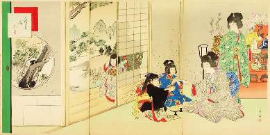
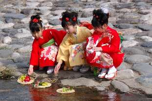

Борис Акунин
Мой календарь
Если вы девочка любого возраста или если у вас есть знакомые девочки (ну вдруг), ни в коем случае не пропустите этот праздник. В Японии он называется Хинамацури, считается одним из самых главных и всех очень радует.
В этот день девочки наряжаются в красивые кимоно и делают прическу. Их приглашают в гости, дарят им подарки и угощают особыми сладостями. Если девочка взрослая, ей положено выпить сакэ (детям тоже дают, но безалкогольное).
От девочки требуется быть красивой и учтиво себя вести, а больше ничего не требуется.
Еще, конечно, хорошо бы устроить парад кукол, если они у вас есть. Если нету, просто разложите что-нибудь радующее глаз и любуйтесь на эту экспозицию.
Существует важный ритуал для девочек, которые минувший год плохо себя вели - такое тоже случается. Сегодня можно избавиться от всех грехов, которые вас мучают. Делаете из бумаги куколку, сажаете ее в маленькую лодочку и пускаете по реке. Это называется «нагасибина». Всё нехорошее уплывет прочь, и вы очиститесь.
Итак: кимоно; гости; подарки; сладости; сакэ; как опция - нагасибина.
То, что скоро 8 марта, значения не имеет. Праздников, особенно для девочек, много не бывает.